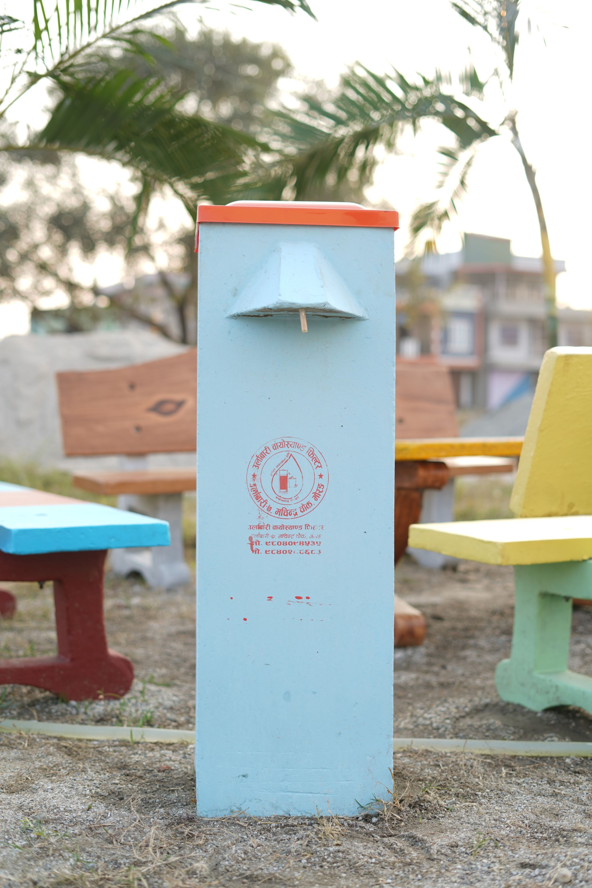
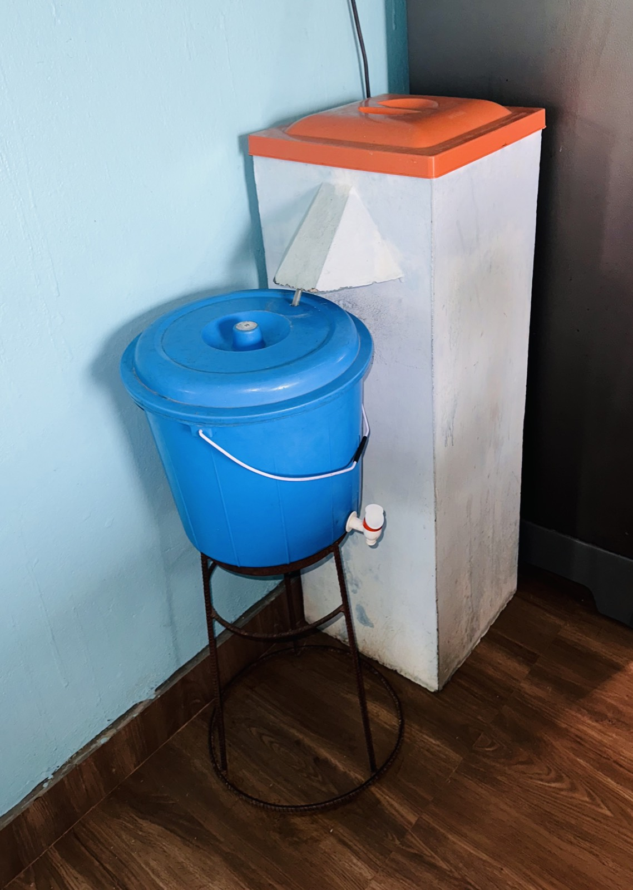
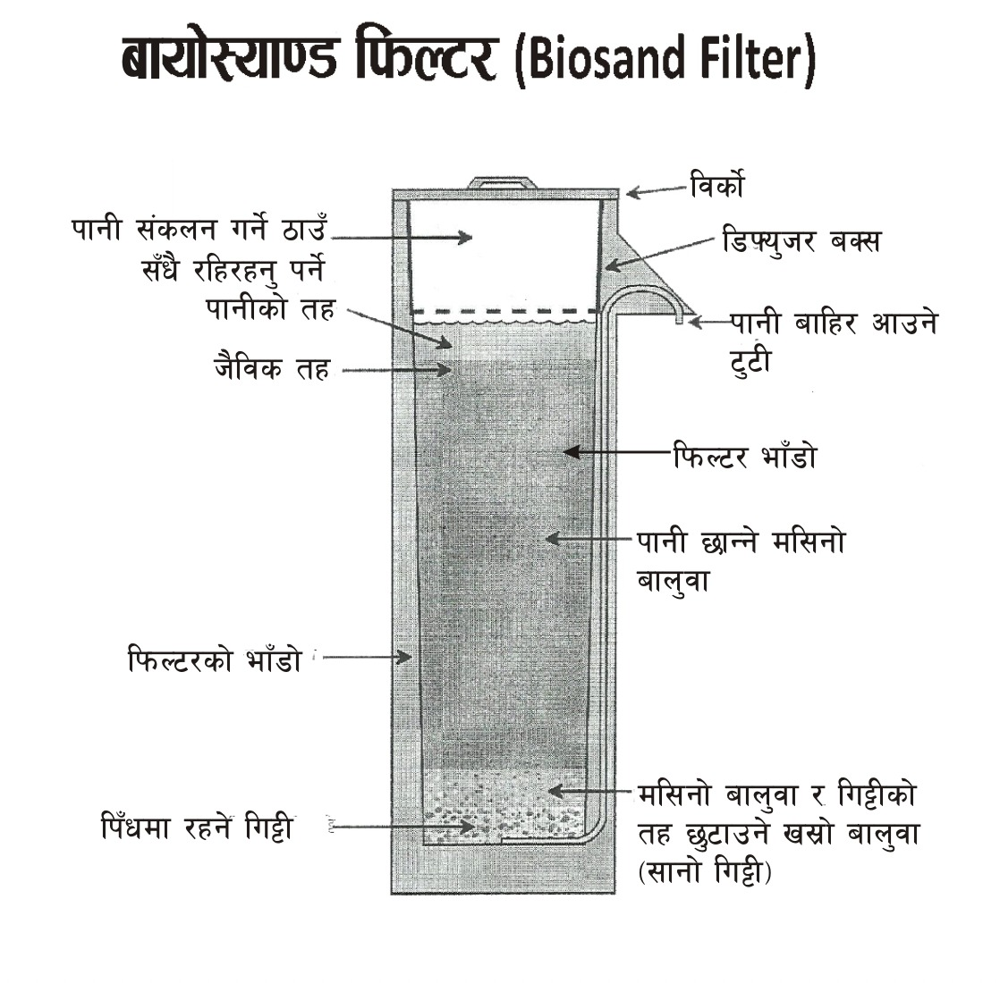
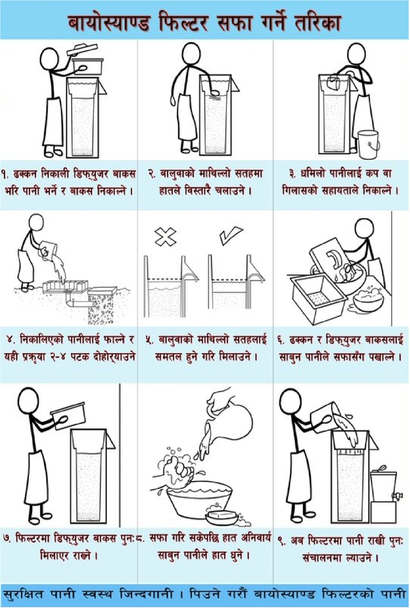
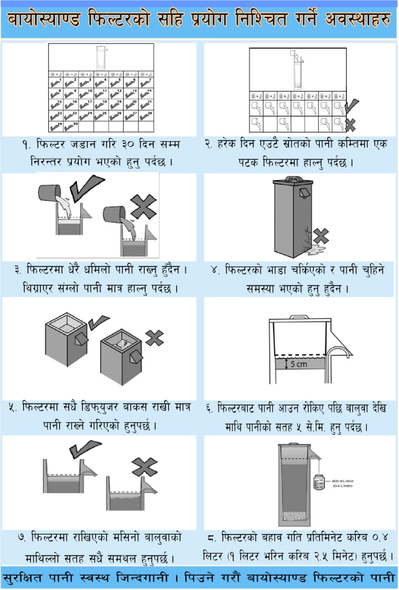

बायो-स्यान्ड फिल्टर: प्राकृतिक र प्रभावकारी।
बायो-स्यान्ड फिल्टर परम्परागत ढिलो बालुवा फिल्टरको एक रूप हो, जुन २०० वर्षभन्दा बढी समयदेखि सामुदायिक पानी उपचारका लागि प्रयोग हुँदै आएको छ। यो सानो छ र घरघरायसी प्रयोगका लागि उपयुक्त हुने गरी बनाइएको छ।
यो फिल्टर प्राकृतिक प्रक्रिया मार्फत काम गर्दछ। पानी माथिबाट हालिन्छ र बालुवा र गिट्टीको तहहरू पार गर्दछ। बालुवाको माथि 'स्मुजडेक' (schmutzdecke) भनिने जैविक तह विकास हुन्छ जसले परजीवीहरूलाई नष्ट गर्दछ, जबकि बालुवाले कणहरू र धमिलोपन हटाउँछ।


दीर्घकालीन समाधानको लागि किफायती एक पटकको लगानी। कुनै महँगो प्रतिस्थापन पार्ट्स आवश्यक पर्दैन।
पानी सफा गर्न पूर्ण रूपमा प्राकृतिक प्रक्रिया प्रयोग गर्दछ। क्लोरीन वा रासायनिक स्वाद हुँदैन।
सञ्चालन र सफा गर्न सजिलो। मात्र पानी हाल्नुहोस् र सफा पानी जम्मा गर्नुहोस्।
परजीवी, ब्याक्टेरिया र धमिलोपनलाई प्रभावकारी रूपमा घटाउँछ, सुरक्षित पिउने पानी प्रदान गर्दछ।
वालुवाबाट पानीको प्रवाह हुँदा पानीमा भएका फोहोरहरु र जिवाणुहरु बालुवाको माथिल्लो सतहको कणमा नै अड्कन्छ ।
फिल्टरमा विकास हुने बायोफिल्ममा रहने ठूला जिवाणुहरुले अन्य साना जिवाणुलाई खानाको रुपमा खान्छन ।
पानीमा रहेका केही जीवाणुहरु बालुवाका कणहरुमा टाँसिदा (+र – चार्जका कारण) फिल्टर गरिएको पानीमा आउन सक्दैनन् ।
केही जीवाणुहरु पर्याप्त खाना वा अक्सिजनको कमीले वा आयु सकिएर मर्दछन् ।
१. फिल्टर भएर आएको पानी जम्मा गर्ने भाँडो फिल्टरको टुटी तल थाप्ने ।
२. फिल्टरको बिर्को खोली माथिबाट बिस्तारै पानी खन्याउने ।
३. पानी फिल्टरबाट छानिएर टुटी तल थापिराखेको भाँडोमा जम्मा हुन्छ ।
४. जैविक प्रदूषणबाट बच्न फिल्टर वरपर र पानी जम्मा गर्ने भाँडा सफा राख्नु पर्छ ।
५. कङ्क्रिट बायोस्याण्ड फिल्टरले प्रति घण्टा २५–३० लिटर र प्लाष्टिक बायोस्याण्ड फिल्टरले प्रति घण्टा १५–२० लिटर पानी छान्छ, जुन ठूलो परिवारको लागि पनि पिउन र खाना पकाउन पर्याप्त हुन्छ ।



तपाईंको बायो-स्यान्ड फिल्टरको प्रयोग र मर्मतसम्भार कसरी गर्ने भन्ने बारे विस्तृत जानकारी डाउनलोड गर्नुहोस्।
प्रयोगकर्ता पुस्तिका हेर्नुहोस्अर्डर गर्न सजिलो छ। हामी स्थानीय डेलिभरी र जडान सहयोग प्रदान गर्छौं। आजै हामीलाई सम्पर्क गर्नुहोस् वा थप जानकारी लिनुहोस्।
मूल्य बुझ्नुहोस्